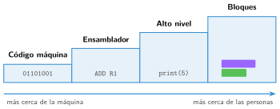

Lenguajes de programación: de la máquina a los bloques
🤔 Pienso5 min
Qué hago aquí: Piensa un momento y contesta con lo que ya sabes. No pasa nada si no lo sabes: es para empezar.
Con este código: 00 = H, 01 = O, 10 = L, 11 = A. ¿Qué dice 00011011? ¿Te gustaría escribir así un texto largo?
📖 Leo y aprendo15 min
Qué hago aquí: Lee despacio, mira los dibujos y los ejemplos, y quédate con la idea clave del final.
Por dentro, un ordenador solo entiende ceros y unos . Escribir así es muy difícil. Por eso se inventaron los lenguajes de programación.

- Código máquina: solo ceros y unos. Es lo que entiende el ordenador.
- Ensamblador: palabras cortas, como
ADD(sumar). - Alto nivel: palabras parecidas al inglés. Por ejemplo, Python o JavaScript.
- Bloques: piezas de colores que encajan. Por ejemplo, Scratch, Code.org o MakeCode.
El ordenador solo entiende código máquina. Por eso hay que traducir los programas. Lo hace otro programa: el compilador o el intérprete.
✏️ Hago25 min
Qué hago aquí: Haz las actividades en orden. Empieza siempre por las básicas.
Une cada lenguaje con su ejemplo.
| Código máquina • | • Scratch |
| Alto nivel • | • 10110010 |
| Bloques • | • Python |
¿Qué lenguaje entiende el ordenador sin traducir?
Ordena del 1 al 4, de más cerca de la máquina a más cerca de las personas: Python, código máquina, Scratch, ensamblador.
Escribe el nombre de dos lenguajes de bloques.
Escribe una ventaja de los lenguajes de bloques y una de los lenguajes de texto.
✏️ Puedes responder escribiendo, con un dibujo o un esquema, o contándolo en voz alta.
🚀 Amplío (si quieres saber más)
Qué hago aquí: ¿Has terminado? Lee la curiosidad o elige el reto. Es voluntario.
Con el código de Pienso, escribe en ceros y unos la palabra HALO. ¿Cuántos ceros y unos harían falta por letra para escribir las 27 letras del abecedario?
✅ Compruebo5 min
Qué hago aquí: Contesta sin mirar la ficha y marca cómo lo llevas.